Study 27 · 13 October 2026
The J cycles its fonts
Gummy only. Ten seconds after the J is whole, its stones let go, land, fade; the next font flies in. Syne, Titan and Dela Gothic out; nine fonts in.
Open the page (click a font to bring it next)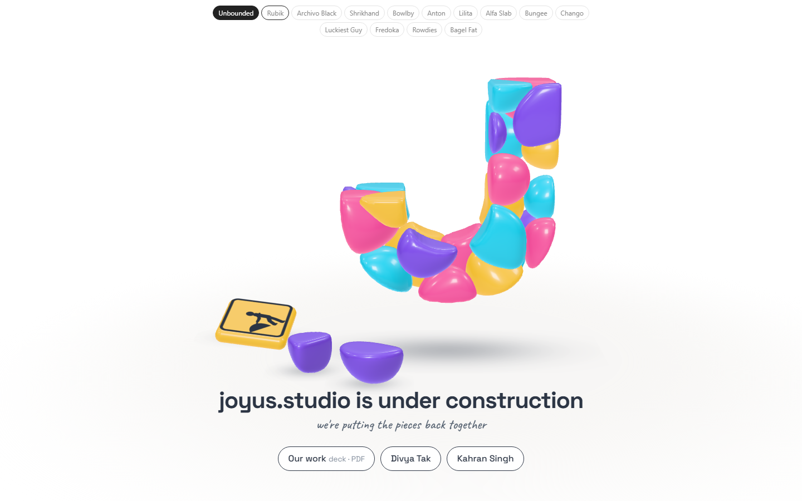
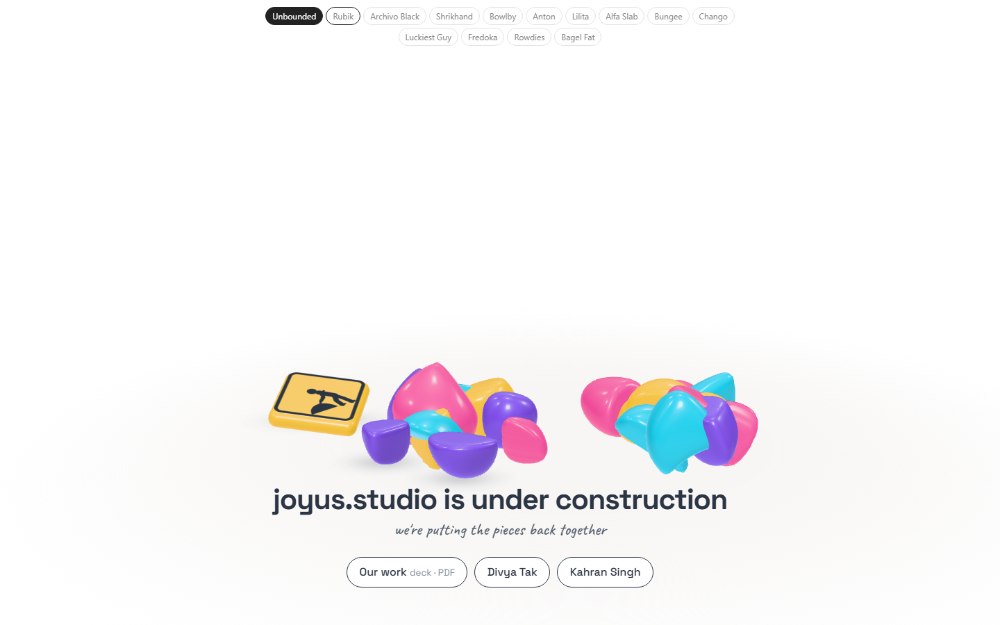
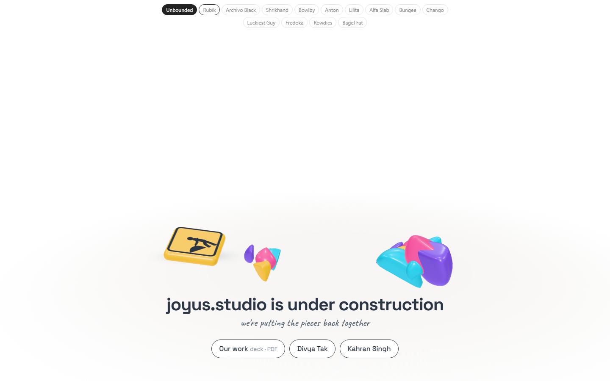
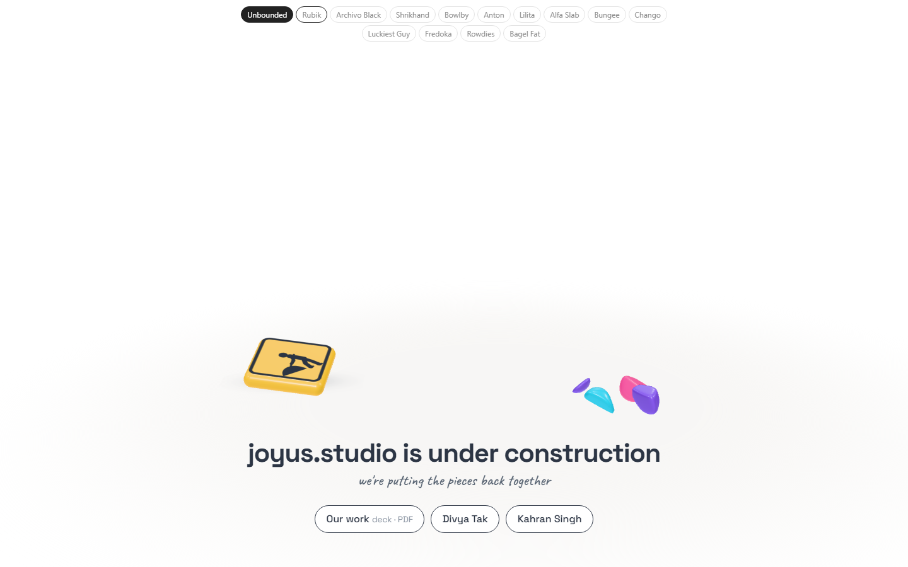
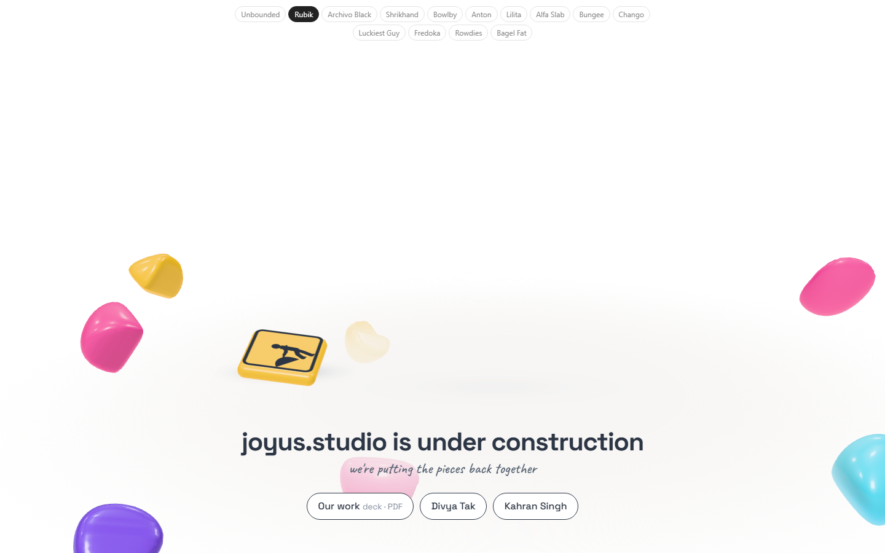
Fourteen fonts
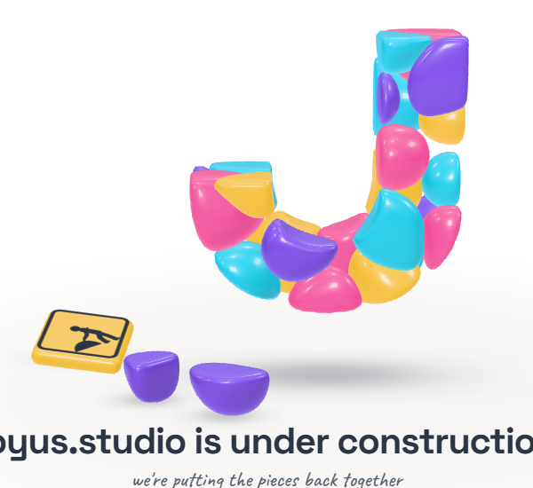
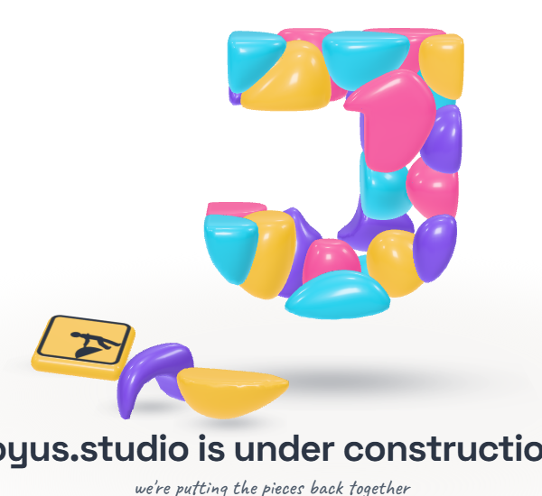
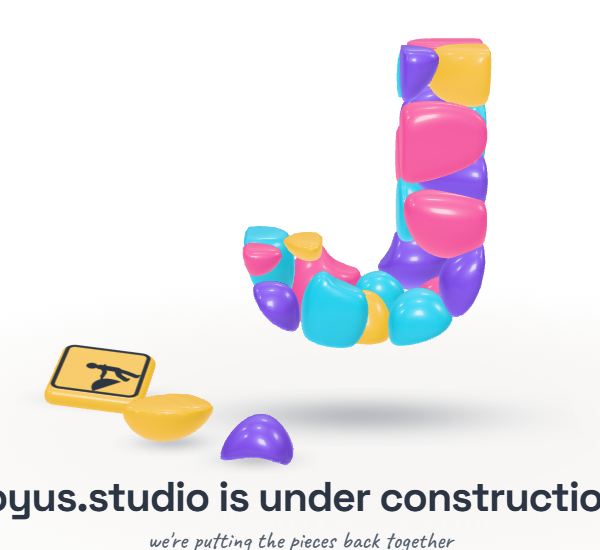
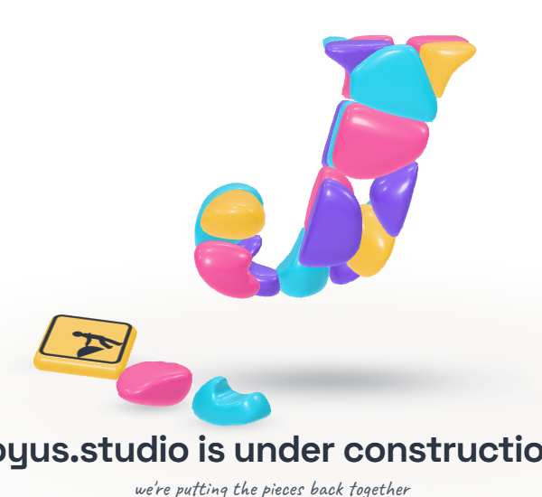
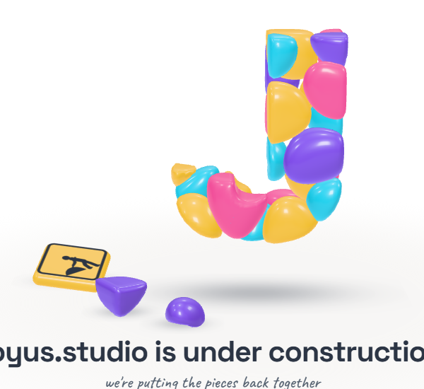
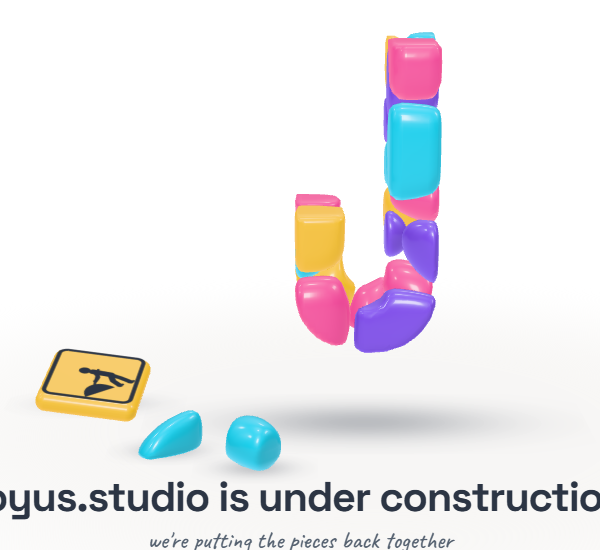
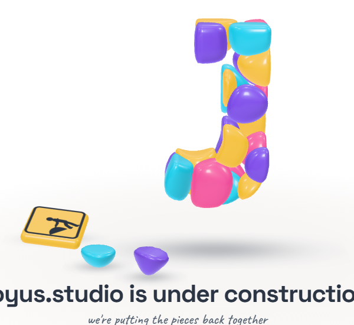
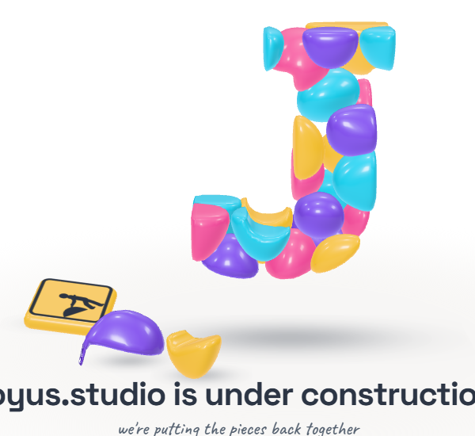
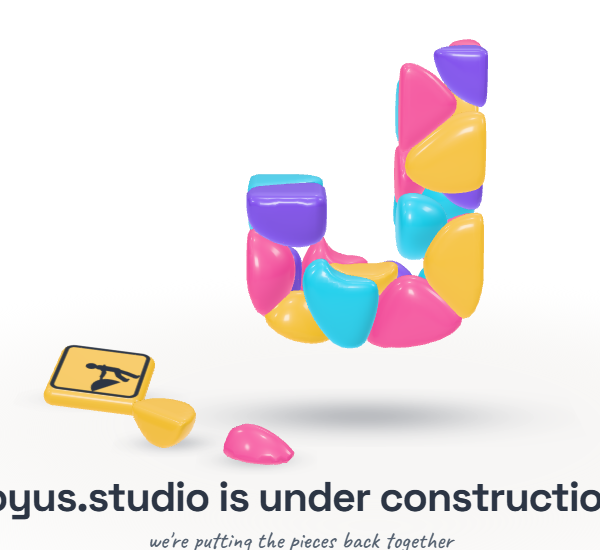
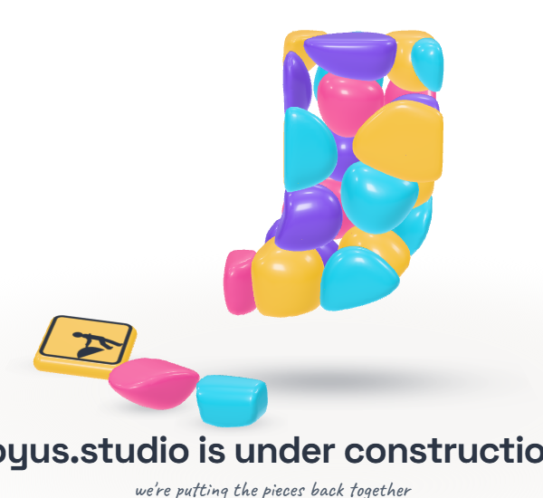
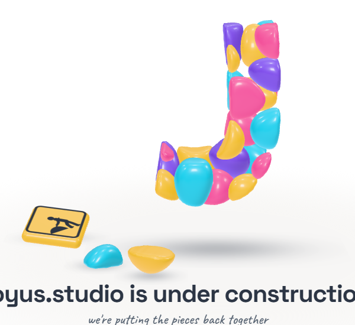
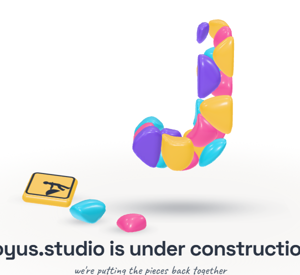
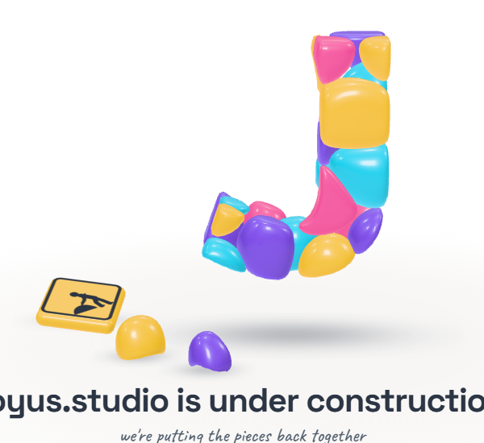
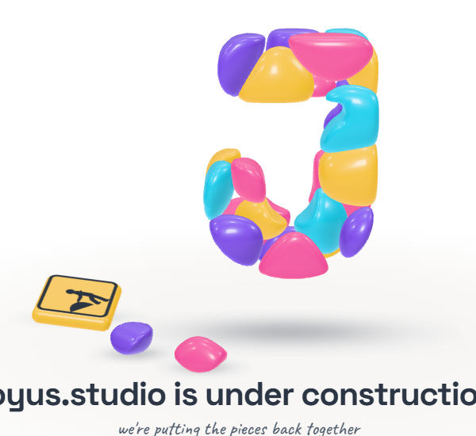
Open
- Which fonts stay; ten seconds, or longer.
All fourteen read as a J (legible-fonts.json, ≥ 0.75; Chango best at 0.89, Anton lowest at 0.77). Try 1 sank the fallen pile into the headline. Test: page-test.mjs, 32 checks in a browser; read by check.cjs.